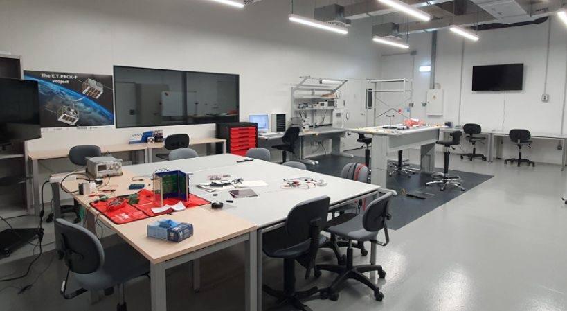

Central AIV area
The Main AIV room is the core workspace of CSAT-Leganés, where the primary assembly and integration activities take place. It features a high-functionality central area with ESD-protected workbenches capable of supporting heavy satellite structures, equipped with a full suite of electronic test and measurement instruments — including power supplies, oscilloscopes, spectrum analyzers, signal generators, multimeters and a digital microscope. The room is also equipped with precision mechanical tools and calibration equipment. This space is designed to support all development and integration work that does not require cleanroom conditions, serving as the everyday workhorse of the facility.